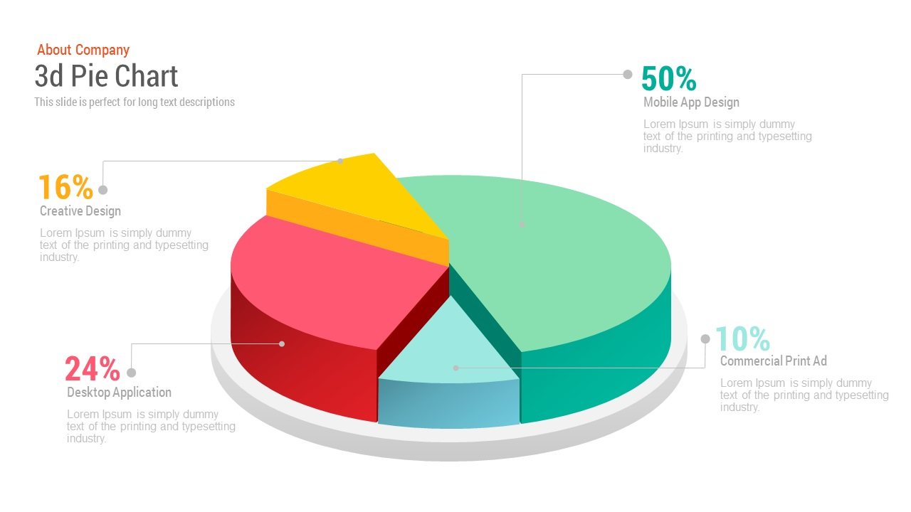
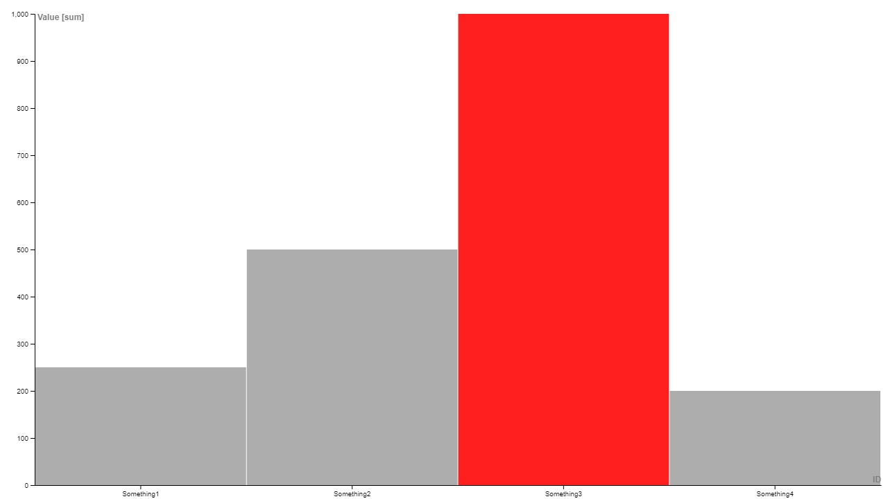

Bad Chart

The 3D-ness of this chart does not add anything to the chart and it does not convey the data in any effective way. Furthermore
there are slices which have a different height to highlight those data points but it makes it confusing since the way the data is represented by volume does not stay consistent
Also pie charts are bad and 3D pie charts are even worse for helping people accurately read data points as it is encoded in either area or volume.
Good Chart

Bar charts are far more effective for visualizing data in general. It is very easy to tell what a value is since it is simply
encoded as the length of the bar. Furthermore, there is no need for extraneous use of color as the categories are clearly seperated without them. Instead
color is used here to highlight an important value.